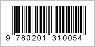

Códigos de barras tradicionales, tales como las impresas en el embalaje del producto, se conocen también como uno códigos de barras bidimensionales. Existen varios tipos de uso común, incluyendo UPC y EAN. La mayoría de aspecto similar a este:

Estos códigos de barras 1D contiene un código único que generalmente describe un producto, como un CD o un libro. Usted puede ver este código en el Internet para encontrar precios, comentarios y más.
Si digitaliza un libro, también puede buscar en el contenido del libro para una palabra o frase, y encontrar todas las páginas en las que aparece: